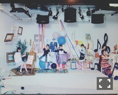
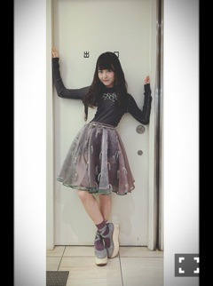
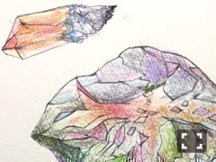

| 2016/03 07 Mon | 自由行動。700回目 |
ハルジオンが咲く頃MV公開！
大正と未来を行き来した男子禁制の世界。
山戸結希監督！コスモス！
ストーリー中の振り付けはなんと
デート前日の夜とまりっか'17の
菅尾なぎささんでした！
久しぶりにお会いしました！
何年ぶりだろう！うれしかっった！
......
イセタンパークネット
坂部三樹郎さん、
シュエ•ジェンファンさんの
アトリエに潜入！
ファッションラバーヽ(ﾟ､｡)ﾉ
http://isetanparknet.com/nogizaka462016/marika-ito/

三越伊勢丹イベント
「おけいこ女子会 With 乃木坂46」

玲香と新潟にやってまいりました。
貴重な女子会ありがとうございました！
寒い中、たくさんの方が
並んでくださいました。
本当にありがとうございました（；＿；）
今回は20人限定でしたが、
いつかまた女子会やりたい！！
近距離で緊張しました！！
今後の参考になる話、
乃木坂を好きになったきっかけなど、
知りたかったこと話してくださいました！
参加してくださったみなさん
本当にありがとうございました∠( 'ω')／
新潟でライブやりたい∠( 'ω')／
女子ライブやりたい∠( 'ω')／

バレエがテーマということで
トゥシューズ風の靴を合わせました。
うーん、色味が絶妙に渋い！！

スカート(MIKIOSAKABE)
グリーンとパープルのオーガンジーを重ねて
ミキオさんオリジナルの刺繍。
森の妖精のクラシックチュチュをイメージ。
ドレス(JennyFax)
ダメージの入ったスウェットの上に
バレリーナみたいなランジェリー。
くたくたで可愛い、
インナーで遊びましょう。
トートバッグ(JennyFax)
幼少期のバレエの写真とデコレーション。
JennyFaxらしさが全開です。
黒は自分のイラストを
コラージュしていただきました。

8日まで。
まりか
コメント(472)
2016/03/07 15:30